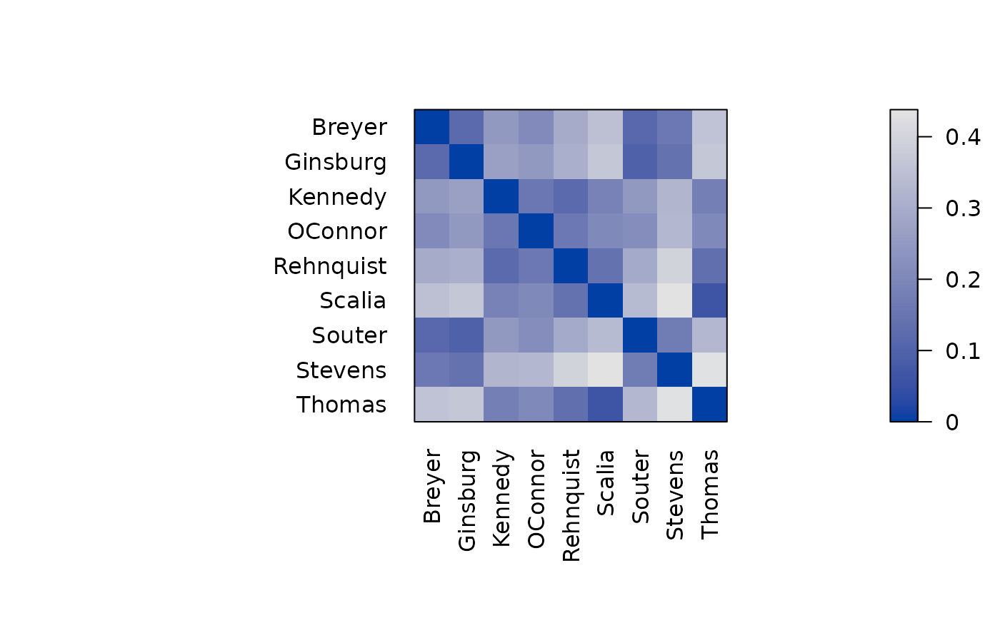
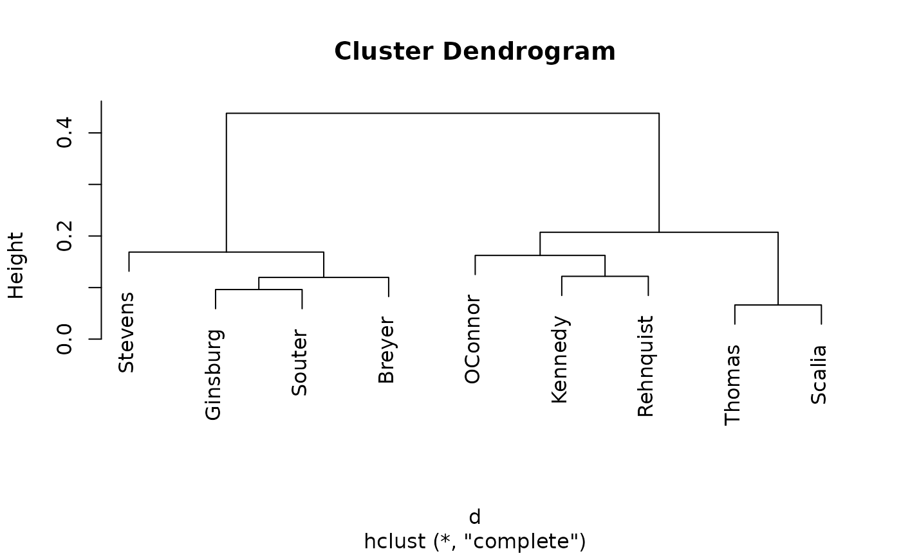
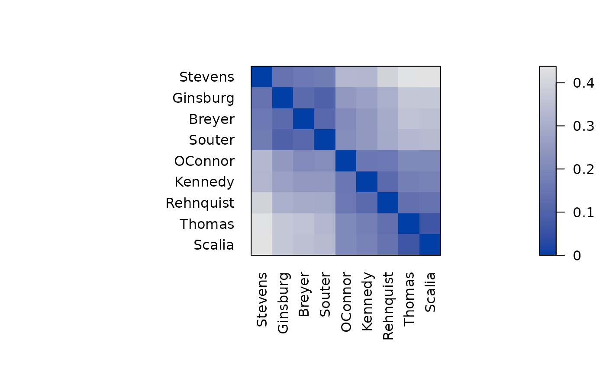
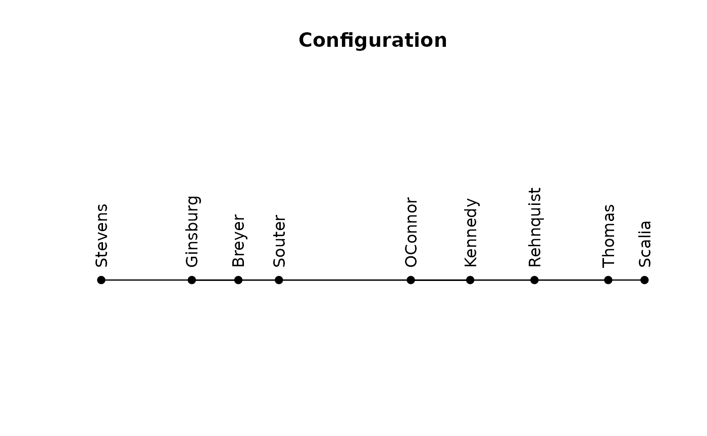

Contains a (a subset of the) decisions for the stable 8-yr period 1995-2002 of the second Rehnquist Supreme Court. Decisions are aggregated to the joint probability for disagreement between judges.
See also
Other data:
Chameleon,
Irish,
Munsingen,
Psych24,
Townships,
Wood,
Zoo,
create_lines_data(),
is.robinson()
Examples
data("SupremeCourt")
# a matrix with joint probability of disagreement
SupremeCourt
#> Breyer Ginsburg Kennedy OConnor Rehnquist Scalia Souter Stevens
#> Breyer 0.00000 0.11966 0.25000 0.20940 0.29915 0.35256 0.11752 0.16239
#> Ginsburg 0.11966 0.00000 0.26790 0.25214 0.30769 0.36966 0.09615 0.14530
#> Kennedy 0.25000 0.26709 0.00000 0.15598 0.12179 0.18803 0.24786 0.32692
#> OConnor 0.20940 0.25214 0.15598 0.00000 0.16239 0.20726 0.22009 0.32906
#> Rehnquist 0.29915 0.30769 0.12179 0.16239 0.00000 0.14316 0.29274 0.40171
#> Scalia 0.35256 0.36966 0.18803 0.20726 0.14316 0.00000 0.33761 0.43803
#> Souter 0.11752 0.09615 0.24790 0.22009 0.29274 0.33761 0.00000 0.16880
#> Stevens 0.16239 0.14530 0.32692 0.32906 0.40171 0.43803 0.16880 0.00000
#> Thomas 0.35897 0.36752 0.17735 0.20513 0.13675 0.06624 0.33120 0.43590
#> Thomas
#> Breyer 0.35897
#> Ginsburg 0.36752
#> Kennedy 0.17735
#> OConnor 0.20513
#> Rehnquist 0.13675
#> Scalia 0.06624
#> Souter 0.33120
#> Stevens 0.43590
#> Thomas 0.00000
# show judges in original alphabetical order
d <- as.dist(SupremeCourt)
pimage(d, diag = TRUE, upper_tri = TRUE)

# reorder judges using seriation based on similar decisions
o <- seriate(d)
o
#> object of class ‘ser_permutation’, ‘list’
#> contains permutation vectors for 1-mode data
#>
#> vector length seriation method
#> 1 9 Spectral
pimage(d, o, diag = TRUE, upper_tri = TRUE)
# Use optimal leaf ordering (hierarchical clustering with reordering)
# which uses a dendrogram
o <- seriate(d, method = "OLO")
o
#> object of class ‘ser_permutation’, ‘list’
#> contains permutation vectors for 1-mode data
#>
#> vector length seriation method
#> 1 9 OLO
plot(o[[1]])

# Use multi-dimensional scaling and show the configuration
o <- seriate(d, method = "sammon")
o
#> object of class ‘ser_permutation’, ‘list’
#> contains permutation vectors for 1-mode data
#>
#> vector length seriation method
#> 1 9 Sammon_mapping
pimage(d, o, diag = TRUE, upper_tri = TRUE)

plot_config(o[[1]])
